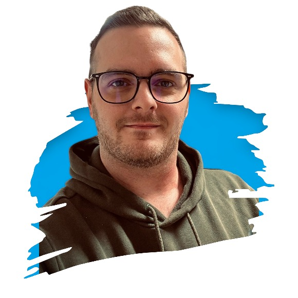

<div class="content">
  <div id="about" class="about-me-container">
    <div class="about-me-header">
      
      <div class="about-me-text">
        <h1 translate>About Me</h1>
        <p translate>
          I am a family man and a certified front-end developer, as well as a
          certified ABAP HANA specialist who loves to solve problems and take on
          new challenges.
        </p>
      </div>
    </div>

    <hr />

    <div class="about-me-body">
      <div class="cv-boxes green">
        <div class="icon-container">
          
        </div>
        <div class="text-container">
          <p translate class="headline">I searched for Help</p>
          <p translate>
            In order to learn more efficiently, I looked for professional
            support and chose the Developer Academy in Munich. In addition to my
            main job, I quickly acquired the basic knowledge of front-end web
            development through individual and team projects. I also
            successfully completed my certificate at SAP as an ABAP HANA
            specialist.
          </p>
        </div>
      </div>

      <div class="cv-boxes red">
        <div class="icon-container">
          
        </div>
        <div class="text-container">
          <p translate class="headline">My Passion</p>
          <p translate>
            The insight into programming confirmed my decision. I love web
            application development and challenges. Every project brings new
            insights. Programming brings me joy!
          </p>
        </div>
      </div>

      <div class="cv-boxes yellow">
        <div class="icon-container">
          
        </div>
        <div class="text-container">
          <p translate class="headline">My Goals</p>
          <p translate>
            I would like to deepen my knowledge in the field of frontend
            development and am therefore looking for a chance to join an
            interesting team, to support this team and develop professionally as
            well as personally.
          </p>
        </div>
      </div>
    </div>
  </div>
</div>
